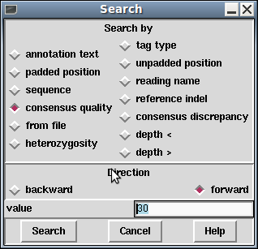

The contig editor's searching ability and its links to the consensus calculation algorithm are crucial in determining the efficiency with which contigs can be checked and corrected. The consensus is calculated "on the fly" and changes in response to edits. For editing, the most important search functions are those which reveal problems in the consensus whilst ignoring all bases that are adequately well determined. The standard search type is therefore by consensus quality. By default this is done in the forward direction and for a quality value of 30, although this is configurable by changing the collowing lines in the gap5rc file.
set_def CONTIG_EDITOR.SEARCH.DEFAULT_TYPE consquality set_def CONTIG_EDITOR.SEARCH.DEFAULT_DIRECTION forward set_def CONTIG_EDITOR.SEARCH.CONSQUALITY_DEF 30
Pressing the "Search" button brings up a separate search window. This allows the user to select the direction of search, the type of search, and a value to search on. The value is entered into a value text box, then pressing the "search" button performs the search. If successful, the cursor is positioned accordingly.

The Control-s and Control-r key bindings in the editor are equivalent to searching for the next or previous match. Both key bindings will bring up the search window if it is not currently displayed (and not search), otherwise they perform the search currently selected in that window. Additionally with the mouse focus in the search dialogue window the Page Up and Page Down keys will perform previous and next search too.
As is described below, there are several search modes.
This positions the cursor at the start of the next tag which has a comment containing the string specified in the value box. The search performed is a regular expression search, and certain characters have special meaning. Be careful when your string contains ".", "*", "[", "]", "\", "^" or "$". The search can be performed either forwards or backwards from the current cursor position. Searching with an empty value will find all tags.
This positions the cursor at the start of the next tag of the specified type. To change the type, click on the currently listed tag type, which displays a tag type selection dialogue. The search can be performed either forwards or backwards of the current cursor position. To find all tags, use "Search by Annotation Comments", with an empty text box.
This jumps to a padded location in the editor and is directly equivalent to typing a number into the position entry box in the bottom left corner of the editor followed by "p".
It is also possible to do relative searches by prefixing the location with + or -. So +100 will skip ahead 100 bases.
As per the padded search, but this jumps to an unpadded coordinate - essentially the number of non-* bases since the start of the contig, regardless of whether the first consensus base is labelled as base 1.
This positions the cursor at the start of the next segment of sequence that matches the value specified in the text box. The search is case insensitive, ignores pads, and can allow a specified number of mismatches. Unlike Gap4, Gap5's sequence search only looks in the consensus sequence. It also operates either forwards or backwards from the current editing cursor position.
This positions the cursor at the left end of the reading specified
in the value text box. Note that not all reading names may be indexed
by Gap5 and that the search will not find unindexed names. See
tg_index -t for information on creating Gap5 databases with
reading name indices.
The reading name has to be an exact match and so currently does not find prefix strings. If multiple sequences exist with the same name (which should be strongly discouraged) then it is undefined which will be found first.
Note: this information may not be available in all scenarios. If you imported the gap5 database from a SAM or BAM file there is an implicit set of reference coordinates used within SAM/BAM. Gap5 can keep track of the relationship between gap5's padded coordinate system and the reference coordinates. This function uses this data to search for the next or previous reference insertion or deletion.
This positions the cursor on the consensus at the next position where the quality of the consensus is below a given threshold. The quality threshold should be entered into the value box and should be within the range of 0 to 100 inclusive.
The consensus algorithm can keep track of the expected number of differences to the consensus given sequence depth and sequence quality values. This search looks for locations where the actual number of differences exceeds the expected amount by more than a specified factor.
The consensus algorithm has a simple heterozygous calling method. Rather than simply weighing up the evidence for the base being A, C, G, T or a pad it also considers that it may be a combination of any two of these values. The consensus scores for the individual bases as well as the highest scoring consensus base can be seen in the editor information line when the mouse cursor is moved over a consensus base.
This search is looking for consensus bases where the best heterozygous score is greater than or equal to the specified value.
This jumps to the next or previous location where the sequence coverage drops below a specified value.
This jumps to the next or previous location where the sequence coverage is higher than a specified value. Regions of extreme depth are often indication of misassemblies.